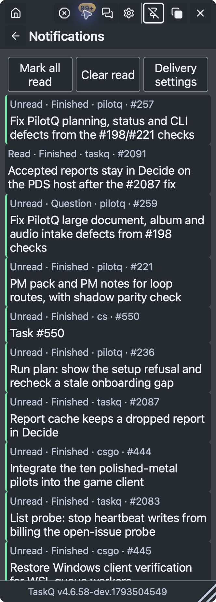
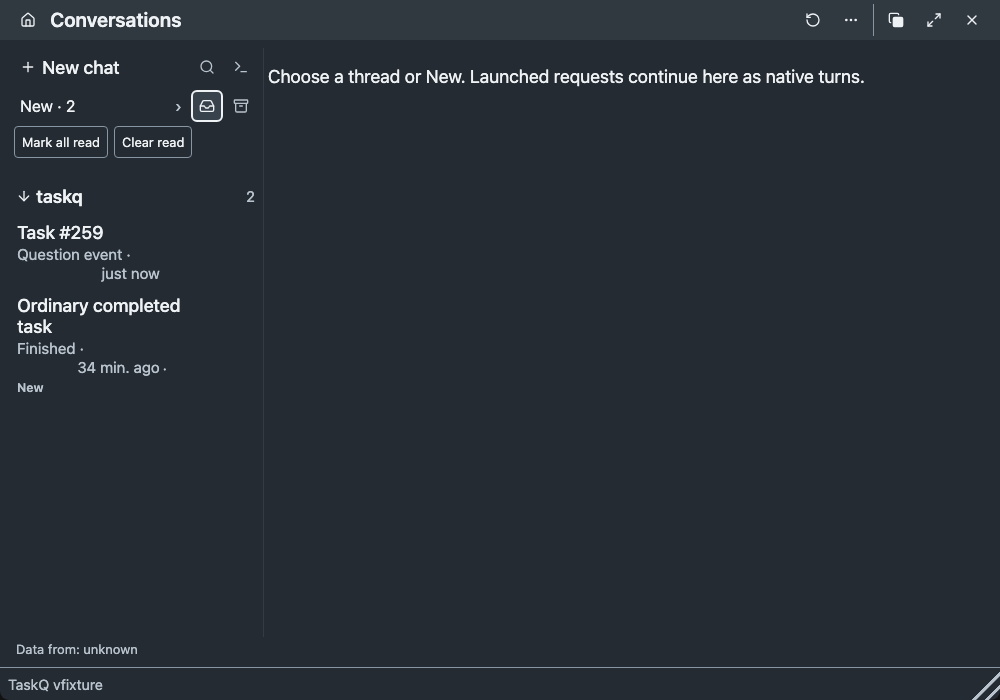
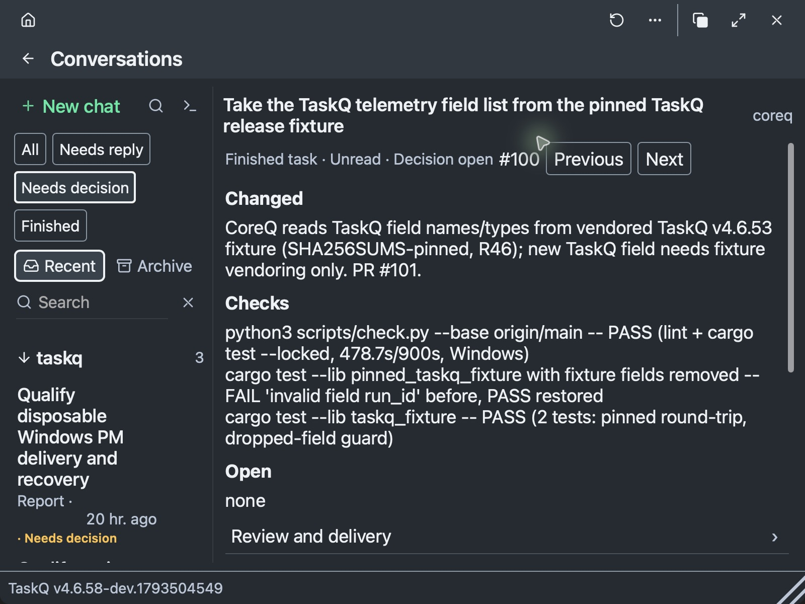
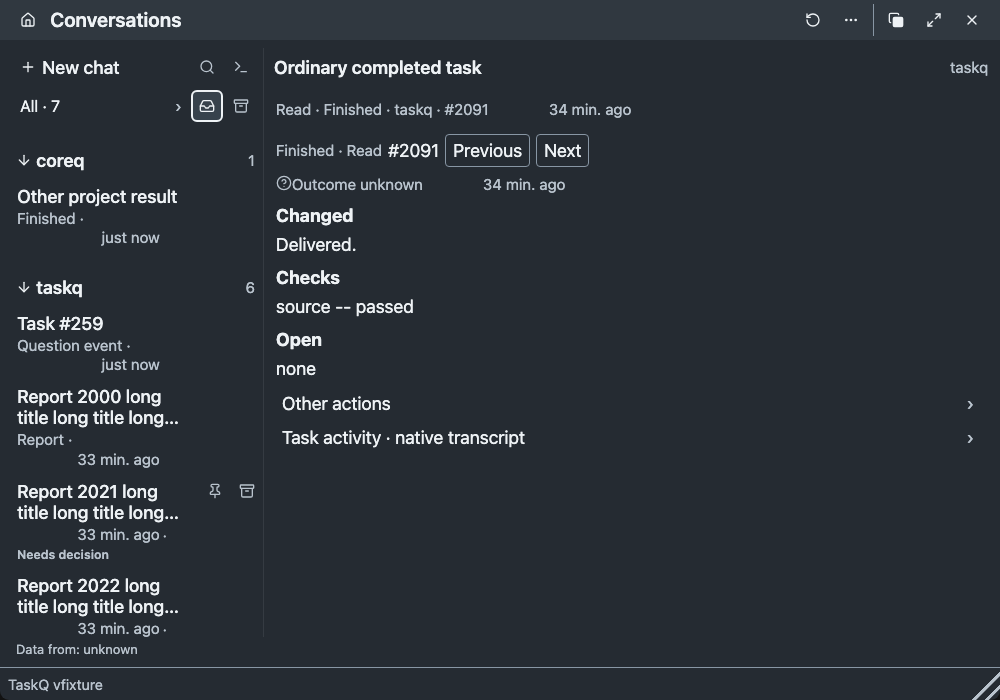
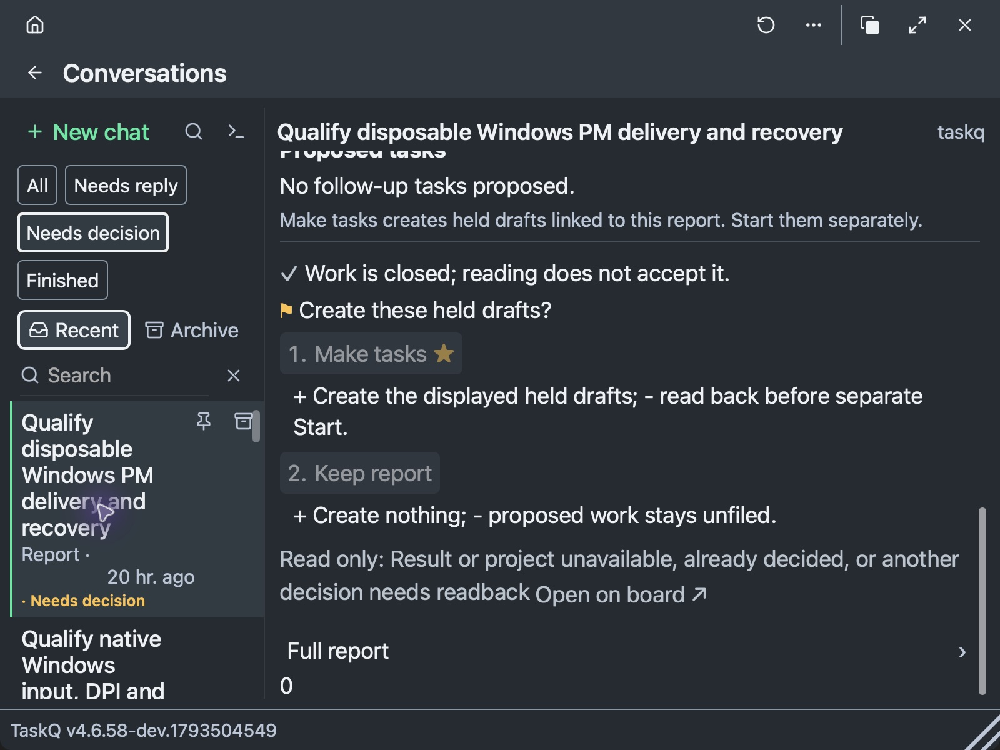
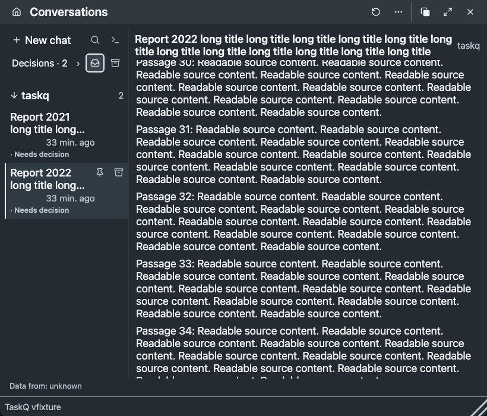
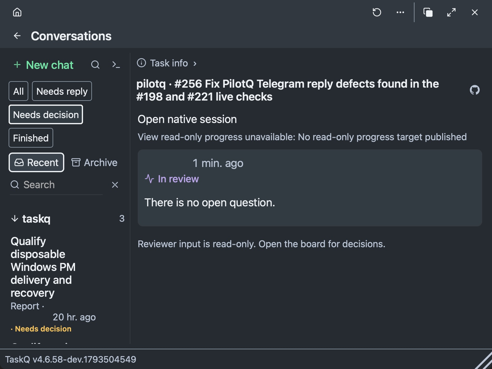
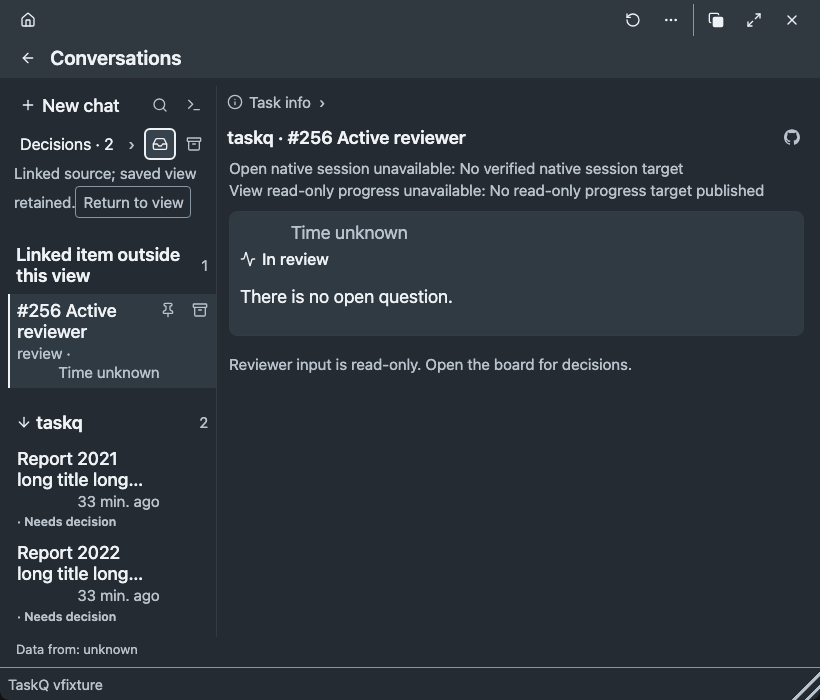

Before: packet native macOS, binary-to-source identity unknown. After: production Chromium bundle, invented data, 18 CSS px. This is source/browser evidence, not installed-native acceptance.
Journey matrix and limitations · Source/build/frame hashes · Checks
Bell opens the existing common reader in New; read/clear remains independent from decisions.


Filtered navigation stays scoped; ordinary completions have optional corrections and no mandatory Accept.


Full report and the source passage/offset survive selection, refresh, reflow and reload.


A linked item is explicit and visible without erasing the saved filter; input remains read-only.

